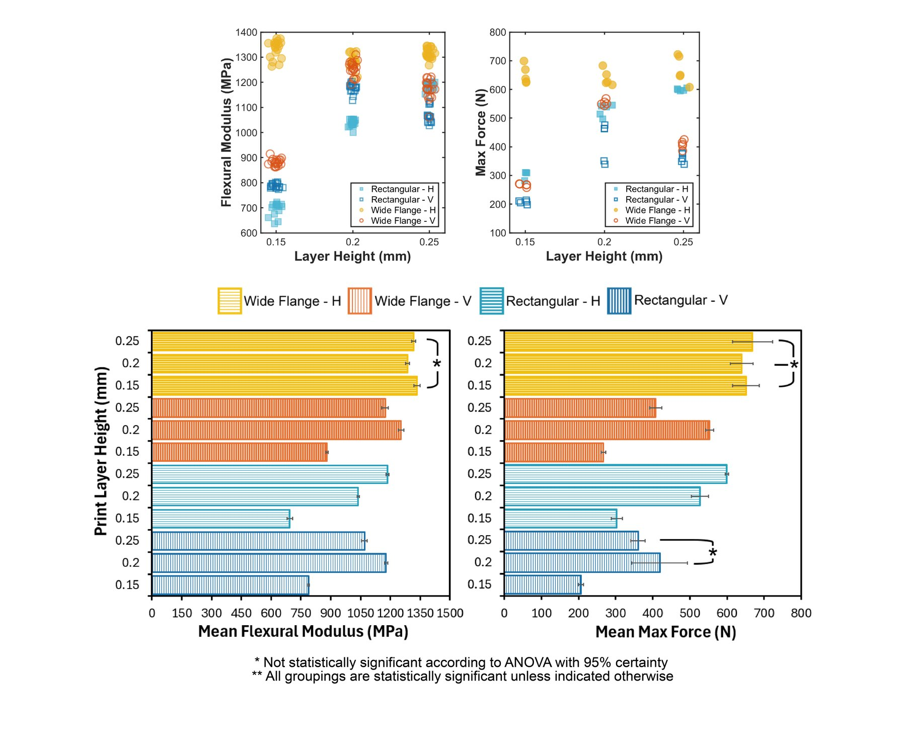

Layer by Layer: Mechanical Response of 3D Printed Beams

Design methodology
Experiment design
Data analysis
Technical communication
Course2.671: Measurement and Instrumentation
TimelineFall Semester 2025
Tools
ADMET/Instron universal testing machine
MATLAB
Excel
Adobe Illustrator
SOLIDWORKS
FDM 3D printing
I designed, ran, and analyzed a three-point bending experiment on FDM-printed beams to study how cross-sectional geometry interacts with print orientation and layer height. Wide-flange beams outperformed rectangular ones by up to 24% in flexural modulus and 32% in load capacity — but each geometry responded differently to orientation and layer height. The work culminated in a flash talk, a poster, and a research paper. View my paper and poster linked here, or continue below to learn about the design decisions that drove this project.
Context/Motivation
2.671: Measurement and Instrumentation introduces testing and data-analysis instruments through weekly labs. At the same time, each student runs an independent research project end to end: choosing a topic, reviewing the literature, designing the setup, executing the experiment, analyzing the data, and interpreting the results — culminating in a flash talk, a poster session, and a final paper.
Problem Framing
3D-printed parts are increasingly used in load-bearing applications, but most of what we know about their mechanical behavior comes from standardized test samples that don't resemble many printed geometries. Having relied heavily on FDM printing in my own projects, I wanted to know whether those trends hold for other cross-sections — and how much print orientation and layer height change the answer.
Process
Standardizing test samples
To compare geometries fairly, I used a rectangular beam based on ASTM D638 standards and designed a wide-flange beam with an equivalent bending moment of inertia, so any difference in response would come from the shape rather than its stiffness on paper.
View Matlab script
%%Variables for Solid Beam
b_mm= 19;
h_mm= 14;
I_s= b_mm * h_mm^3 /12;
fprintf("Bending Moment for Solid Beam: %10.6f[mm^4]\n",I_s)
%% Variables for Wide Flange Beam
%Centroid
d_t = (A_1*(t_f_mm + t_w_mm + t_f_mm/2) + A_2*(t_f_mm + t_w_mm/2) + A_3*t_f_mm/2 )/(A_1 + A_2 + A_3);
% top flange (wide parts)
b_f_mm = 19;
t_f_mm = 3;
I_1 = b_f_mm*t_f_mm^3/12;
A_1 = b_f_mm*t_f_mm;
d_1 = abs((t_f_mm + t_w_mm + t_f_mm/2) - d_t);
% web (center part)
b_w_mm = 2.55418;
t_w_mm = 9;
I_2 = b_w_mm*t_w_mm^3/12;
A_2 = b_w_mm*t_w_mm;
d_2 = abs((t_f_mm + t_w_mm/2) - d_t);
%bottom flange
I_3 = b_f_mm*t_f_mm^3/12;
A_3 = b_f_mm*t_f_mm;
d_3 = abs(t_f_mm/2 - d_t);
%%Total Bending MOI
% I_t = b_w_mm * t_w_mm^3 /12 + 2 *(b_f_mm*t_f_mm^3/12 * (t_w_mm+b_w_mm)/2 * t_f_mm*b_f_mm);
I_t = (I_1+A_1*d_1^2) + (I_2+A_2*d_2^2) + (I_3+A_3*d_3^2);
fprintf("Bending Moment for Wide Flange Beam: %10.2f[mm^4]\n", I_t)
%% Equate Solid and Wide Flange
b_w = (I_s - (I_1+A_1*d_1^2) - (I_3+A_3*d_3^2))/(t_w_mm^3/12 + t_w_mm*d_2^2);
fprintf("Base of web: %10.5f[mm]\n", b_w)Determining variables
To remain within scope for the class, I crossed the two standardized geometries with the two most typical print orientations (horizontal and vertical) and three common layer heights (0.15 mm (could be considered "fine" quality), 0.20 mm (fairly standard quality), and 0.25 mm ("rough" quality typically reserved for quick prints)). 12 distinct conditions were determined with five printed specimens each — 60 beams in total. Every specimen was tested in three-point bending for flexural modulus and maximum load before failure.
MATLAB analysis
[NEEDS INPUT: what the scripts did — or cut this decision; two is enough for this project.]
View Matlab script modulus (failure was basically the same except it just found peak force)
%%% GO FORTH PROJECT
% How does the orientation and print layer thickness affect the strength of
% 3D printed beams
clc;close all; clear all;
%% Read Data
ReadTable_LoadDisplacementData;
% Read geometry data (Beam Measurements.csv)
ReadTable_BeamMeasurements;
%% Plot Example
k = 116;
figure;
plot(Test(k).data.POSITION_mm_, Test(k).data.LOAD_N_, '.')
xlabel('Displacement (mm)')
ylabel('Force (N)')
improvePlot;
[f1, params, uParams, fit_is_significant] = linear_fit(Test(k).data.POSITION_mm_, Test(k).data.LOAD_N_, 1);
%% Constants
L_mm = 120; % Support span [mm]
%% Fit Linear Regimes
numTests = numel(Test);
fitResults = struct('filename', [], 'geometry', [], 'layerHeight', [], ...
'orientation', [], 'slope', [], 'uSlope', [], 'intercept', [], ...
'uIntercept', [], 'significant', [], 'I', [], 'E', []);
geomData = BeamTest(1).data;
for t = 1:numTests
%rename variables
T = Test(t).data;
x = T.POSITION_mm_;
y = T.LOAD_N_;
%parse for file name to sort
name = erase(Test(t).name, '.csv'); %remove .csv from filename
parts = split(name, '_'); %split sample and test number from sample type
main = parts{1};
%Parse for geometry, then remove to move on to next var
if startsWith(main, "Solid", 'IgnoreCase', true)
geom = "Solid";
main = erase(main, "Solid");
elseif startsWith(main, "WF", 'IgnoreCase', true)
geom = "Wide Flange";
main = erase(main, "WF");
else
geom = "Unknown";
end
%pattern search for layer hieght and print orientation
tokens = regexp(main, '([\d.]+)([A-Za-z])', 'tokens');
if ~isempty(tokens)
layerHeight = str2double(tokens{1}{1});
orient = tokens{1}{2};
else
layerHeight = NaN;
orient = "Unknown";
end
% apply linear_fit.m-
[~, ~, params, uParams, fit_is_significant] = evalc('linear_fit(x, y, 0);');
slope = params(1);
intercept = params(2);
uSlope = uParams(1);
uIntercept = uParams(2);
%Match area moment of inertia (I) from Beam Measurements
sampleName = extractBefore(name, 'T'); % e.g., "Solid0.2V_S1"
idx = find(strcmpi(geomData.SampleName, sampleName), 1);
if ~isempty(idx)
I = geomData.I_mm_4_(idx);
else
I = NaN;
warning('No matching I found for %s', sampleName);
end
%Compute Flexural Modulus
E_MPa = (L_mm^3 * slope) / (48 * I);
%store results
fitResults(t).filename = Test(t).name;
fitResults(t).geometry = geom;
fitResults(t).layerHeight = layerHeight;
fitResults(t).orientation = orient;
fitResults(t).slope = slope;
fitResults(t).uSlope = uSlope;
fitResults(t).intercept = intercept;
fitResults(t).uIntercept = uIntercept;
fitResults(t).significant = fit_is_significant;
fitResults(t).I = I;
fitResults(t).E = E_MPa;
end
%% Convert to table
resultsTable = struct2table(fitResults);
%% Group by Geometry, Layer Height, and Orientation
[G, geometry, layerHeight, orientation] = findgroups( ...
resultsTable.geometry, resultsTable.layerHeight, resultsTable.orientation);
E_mean = splitapply(@mean, resultsTable.E, G);
E_std_sample = splitapply(@(x) std(x, 0), resultsTable.E, G);
E_std_pop = splitapply(@(x) std(x, 1), resultsTable.E, G);
groupedResults = table(geometry, layerHeight, orientation, E_mean, E_std_sample, E_std_pop);
%% Display results
fprintf('\nGeometry Layer Orient Mean E (MPa) s_s (MPa) s_p (MPa)\n');
fprintf('----------------------------------------------------------------------\n');
for i = 1:numel(E_mean)
fprintf('%-12s %-10.2f %-10s %-12.2f %-12.2f %-12.2f\n', ...
geometry{i}, layerHeight(i), orientation{i}, ...
E_mean(i), E_std_sample(i), E_std_pop(i));
end
%% Save results
outputDir = 'C:\Users\potat\OneDrive\Documents\MATLAB\2671 MATLAB\RawData\Results';
if ~exist(outputDir, 'dir')
mkdir(outputDir);
end
writetable(resultsTable, fullfile(outputDir, 'FlexuralModulus_Individual_FullV2.csv'));
writetable(groupedResults, fullfile(outputDir, 'FlexuralModulus_Grouped_FullV2.csv'));Room for Improvement
There were many other avenues which this project could have taken which I would have enjoyed to see: including intermediary print angles between horizontal and vertical, incorporating print infill patterns, and even expanding to SLA and/or SLS printing. My project was pretty thorough, perhaps more than the class demanded, using lots of samples and lots of trials/samples to extract as much data as possible and eliminate noise. In hindsight, this may have been overkill for the class scope, and the effort would have been enjoyed more by instead including additional beam specimens with print angle, infill patterns, or method.
Outcome
- Wide-flange beams: up to 24% higher flexural modulus and 32% higher load capacity than rectangular beams
- Horizontally printed beams sustained 16–66% higher loads than vertical ones
- Orientation affected stiffness in opposite ways: wide-flange beams were up to 12% stiffer printed horizontally; rectangular beams were 12% stiffer printed vertically, up to 0.25 mm layer height
- Thicker layers consistently helped horizontal beams; vertical beams performed best at moderate layer heights
Reflection
Learned critical information regarding the validity of data and how to design experiments that can produce the most useful and valid data possible.